胡思乱想
你喜欢在作业本上画画吗？在学校我经常把自己的一些想法画在本子上，拿到电脑了再用代码实现它。
想不想看看我平时都在思考啥，或者说我想到的东西都实现了吗？
EasiNoteThemePatcher（已实现）
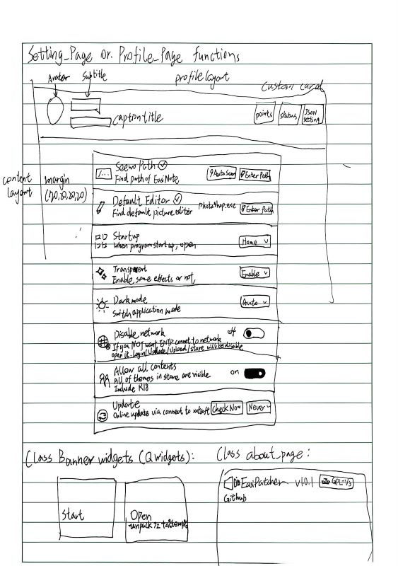
已实现
 2025/10（估计时间）
2025/10（估计时间）
 注释：这个项目我已实现，请看站内链接，或在GitHub下载。这是设置页面的设计图，其他页面的设计丢失了。
注释：这个项目我已实现，请看站内链接，或在GitHub下载。这是设置页面的设计图，其他页面的设计丢失了。
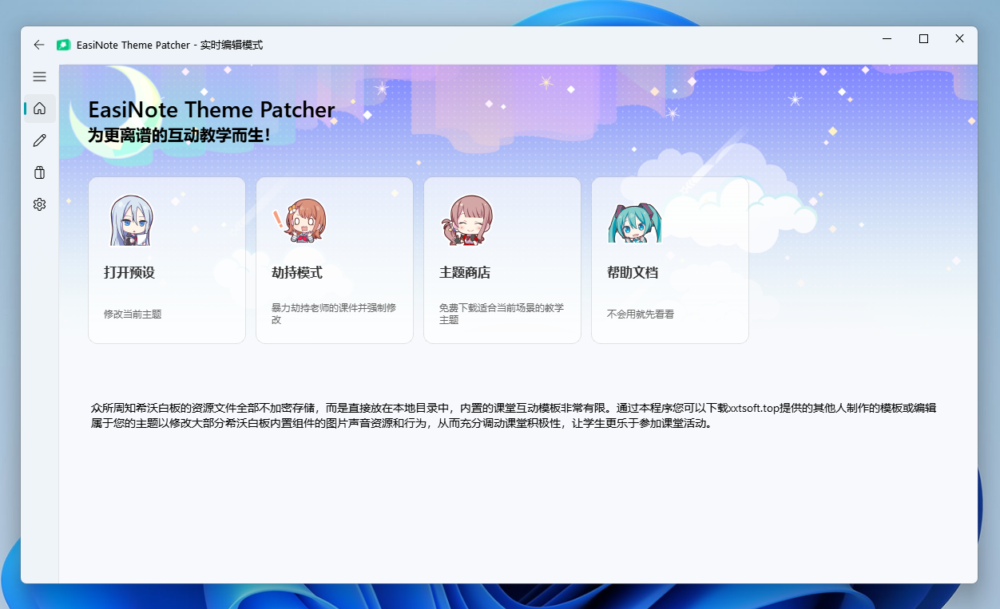
假如韩愈有 GitHub
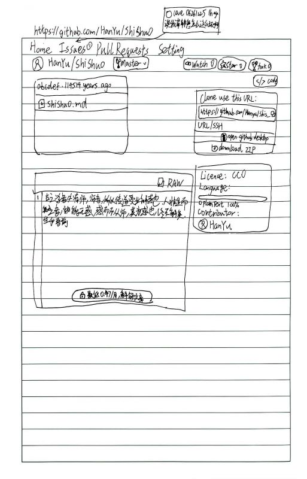
 2025/11（估计时间）
2025/11（估计时间）
 注释：当时应该是背《师说》背傻了。。。
注释：当时应该是背《师说》背傻了。。。
EasiUse（未实现）
未实现
 2025/11（估计时间）
2025/11（估计时间）
 注释：没有黑我们物理老师的意思哈，她人真的蛮好的，这个项目本来想做，后面时间原因就没做了。
注释：没有黑我们物理老师的意思哈，她人真的蛮好的，这个项目本来想做，后面时间原因就没做了。
VocaloidInfo（未实现）
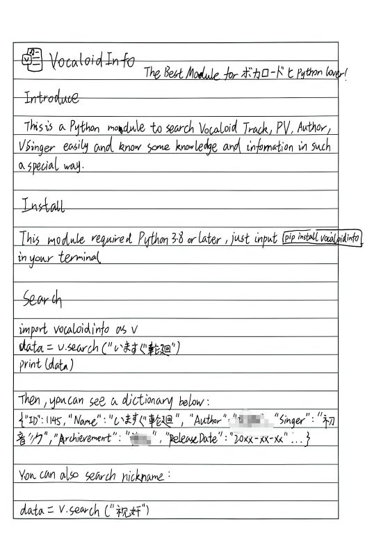
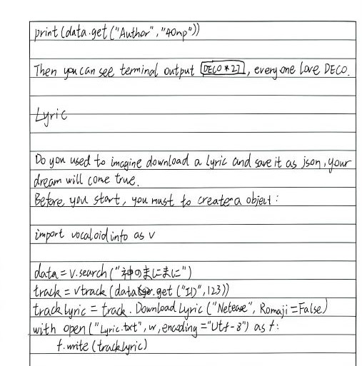
未实现
 2026/2（估计时间）
2026/2（估计时间）
 注释：打码是因为部分数据标注错误。现在Vocaloid数据库已经很全了，根本没必要重复造轮子，其实我更想要一个周榜的API（
注释：打码是因为部分数据标注错误。现在Vocaloid数据库已经很全了，根本没必要重复造轮子，其实我更想要一个周榜的API（
全校最简单的RDP教程
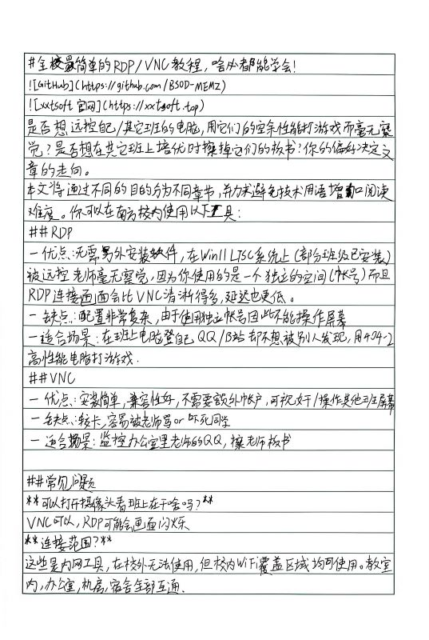
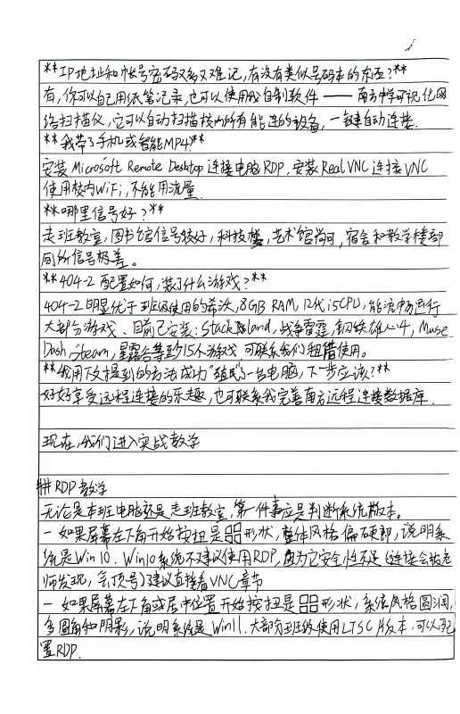
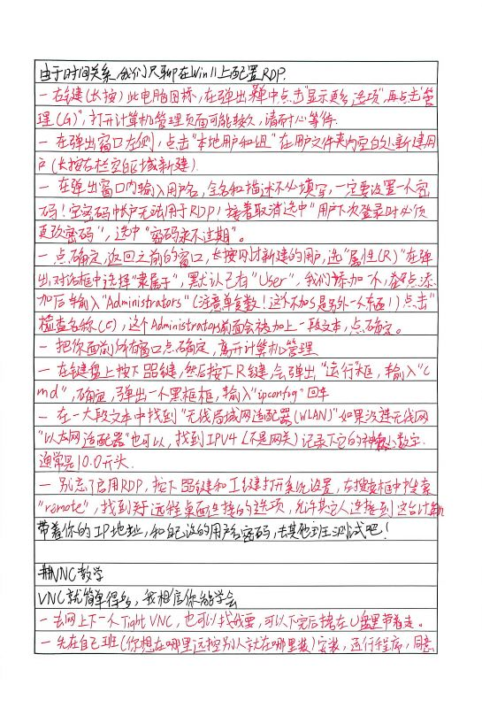
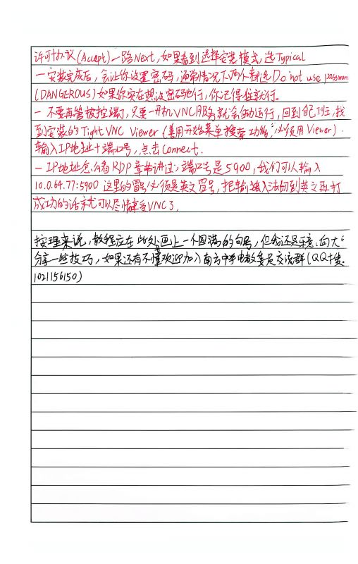
 2026/3（估计时间）
2026/3（估计时间）
 注释：当时是有人晚自习前问我怎么RDP，我在没法用电脑，碰不到任何参考资料的情况下晚自习用纸和笔自己写出来的，如果一些设置项有差异也是很正常的。
注释：当时是有人晚自习前问我怎么RDP，我在没法用电脑，碰不到任何参考资料的情况下晚自习用纸和笔自己写出来的，如果一些设置项有差异也是很正常的。
EasiCleaner（未实现）
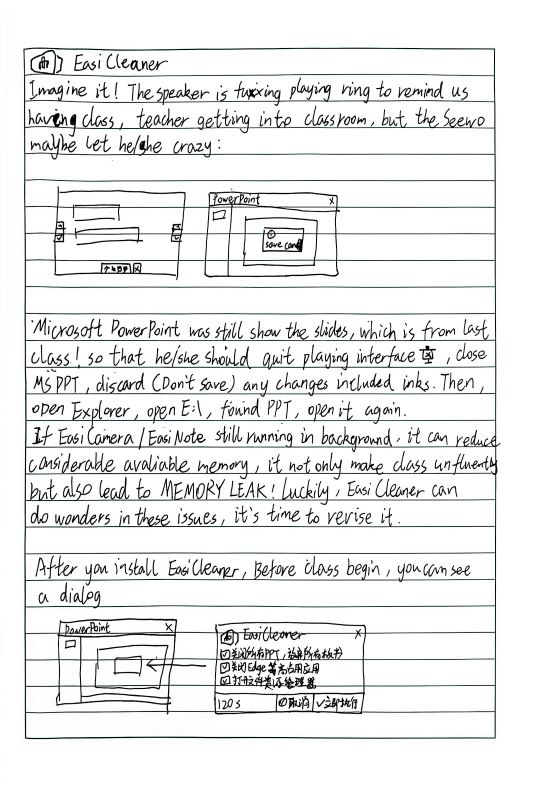
未实现
 2026/4（估计时间）
2026/4（估计时间）
 注释：之前班主任总是因为电脑卡而责怪我这个电教委员，如果上节课老师走了没关PPT那4GB RAM炸了很正常，所以我希望做程序自动释放内存，并缩短课前准备时间。
注释：之前班主任总是因为电脑卡而责怪我这个电教委员，如果上节课老师走了没关PPT那4GB RAM炸了很正常，所以我希望做程序自动释放内存，并缩短课前准备时间。
ClassBoard（已实现）
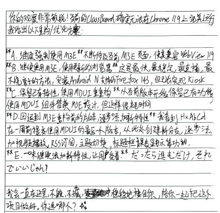
已实现
 2026/5（估计时间）
2026/5（估计时间）
 注释：这个项目我已实现，请看GitHub，设计稿我找不到了，上面那张是我发疯的时候写的（
注释：这个项目我已实现，请看GitHub，设计稿我找不到了，上面那张是我发疯的时候写的（
这里我想和大家多聊一会，我们学校每个班门口都挂了一个安卓电子班牌，但一直废弃。4月份我想做一个班牌软件复活它，而5月份学校就重新启用这些班牌了。但是那么好的班牌竟然只用来放新闻，太浪费了吧。
我和AbCd继续用MaterialDesign3设计班牌界面，通过web让班牌能显示日历、天气、学校宣传片等常规信息，也保留新闻等功能，甚至能集控获取课表（支持CSES格式）即将上课时提醒门外的同学回教室！
后来这条路越走越偏：那个班牌上有读卡器，我们做出了刷饭卡管理员登录；那个班牌是安卓7，我们偏要把它仿成安卓16，通知中心都做出来。我们把这个假班牌系统部署到Netlify上，但由于我额度不足，现在已经关闭这个项目，所以很可惜，你不能领略它的风采了，但它确实在我们学校风光过一阵子。
EntertainingIsland（已实现）
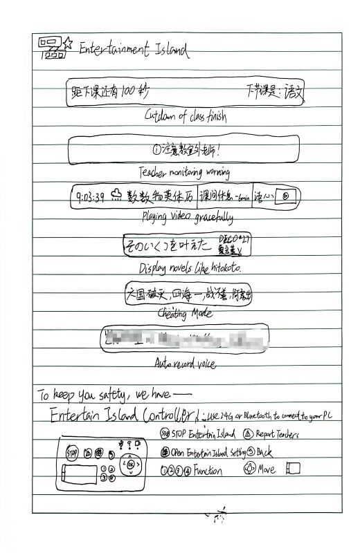
已实现
 2026/5（估计时间）
2026/5（估计时间）
 注释：这个项目我已实现，请看站内链接，或在GitHub下载，这是我第一次尝试用C#开发ClassIsland插件，也是第一次这么完完全全把纸上的东西变为现实，还是挺开心的。
注释：这个项目我已实现，请看站内链接，或在GitHub下载，这是我第一次尝试用C#开发ClassIsland插件，也是第一次这么完完全全把纸上的东西变为现实，还是挺开心的。
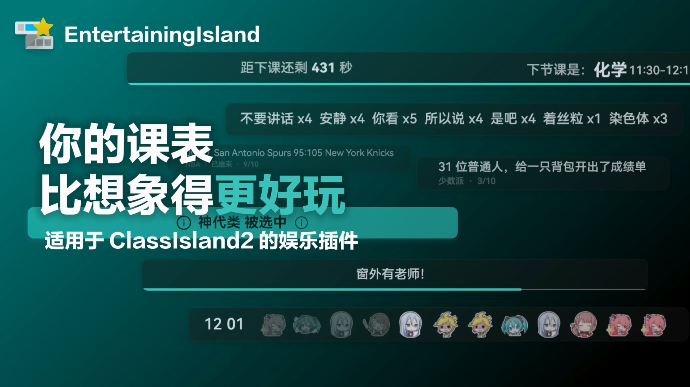
ClassIslnadInjector（已实现）
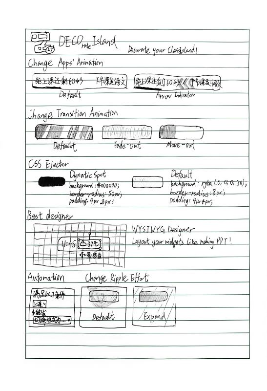
已实现
 2026/7（估计时间）
2026/7（估计时间）
 注释：这个项目我已实现，请看站内链接，或在GitHub下载，先等我做个宣传片出来吧。。
注释：这个项目我已实现，请看站内链接，或在GitHub下载，先等我做个宣传片出来吧。。
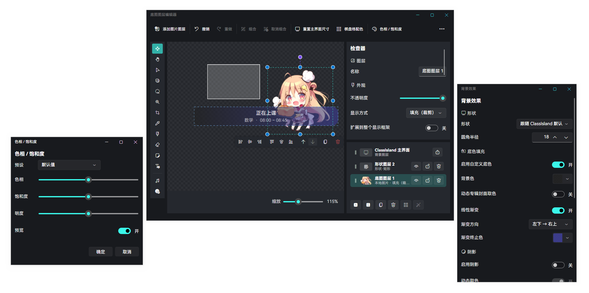
小趣闻
我曾在本子上做过一些计划，你能猜到是什么时候的吗？猜对了也没奖励哦~
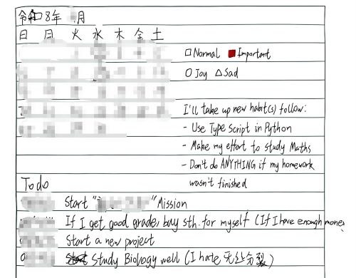
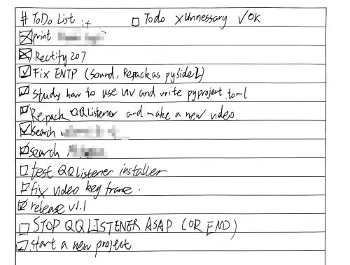